実在のサイト

制作実績 ／ 公式サイト
D-VIEW
経営支援サービスの公式サイト。3Dで動く見せ方を含め、設計・デザイン・実装を担当しました。
TENKA LAB
「作品例」の欄はすべて架空のお店です。「制作実績」の欄は実在のサイトです。
WORKS
予約につながる LP・ホームページから、売上の管理シート、予約やチャットの仕組みまで。公式サイトを設計から実装まで手がけた実績と、13店舗の経理を統括してきた経験をもとに、お店の数字まで考えて仕上げます。AIで早く形にして、ご確認と手直しに時間をかけます。


RESULTS
下の作品例とは別に、実際に公開されているサイトです。
制作実績 ／ 公式サイト
経営支援サービスの公式サイト。3Dで動く見せ方を含め、設計・デザイン・実装を担当しました。

制作実績 ／ 公式サイト
札幌のナイトクラブ／ライブハウスの公式サイト。設計・デザイン・実装を担当しました。
SAMPLES
店名・人名・数字はすべて架空です。実在のお店・お客様の実績ではありません。
WEBSITE

01 ／ 予約LP
焼鳥店の接待・宴会の予約を、スマホでその場で受けるページ
本番にするときは：お店の写真・文章に差し替え、予約の受け取り先と二重送信の防止を足します
接待や少人数の宴会の店をスマホで探す会社員が、個室・コースの総額・キャンセルの決まりを確かめて、夜でもその場でWeb予約できるようにする。

02 ／ ホームページ
初めての方の不安を減らし、予約につなげる美容室のホームページ
本番にするときは：お店の写真・文章・料金に差し替え、予約の窓口とつないで公開します
初めての街で「失敗しない美容室」を探す方が、料金・雰囲気・スタイリストを確かめて、不安なく予約に進めるようにする。
SYSTEM
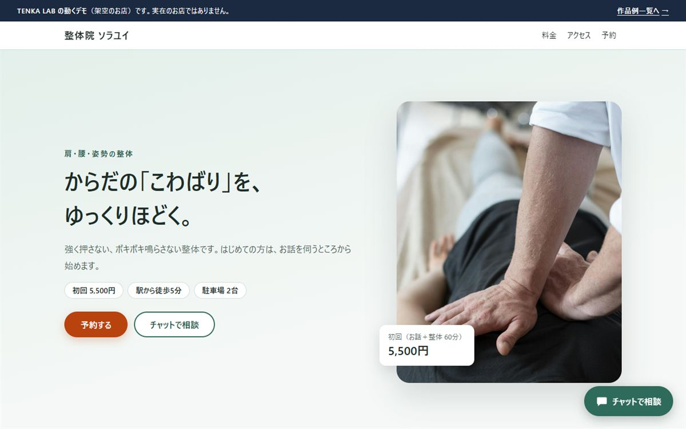
03 ／ AIチャット（動くデモ）
営業時間外の質問に答え、予約まで案内するチャット窓口
本番にするときは：お店の情報で答えを作り直し、予約の受け取り先とのつなぎを足します
営業時間外や電話しにくいときでも、料金・初回の不安・駐車場・空き状況にその場で答え、予約ページまで案内する。お店の電話対応を減らし、予約の取りこぼしを防ぐ。
予約は送信されません。外部のサービスにはつながず、ページの中だけで動きます。


04 ／ 予約・問い合わせ管理（動くデモ）
電話・LINE・メールの予約を1つにまとめる、教室の受付管理
本番にするときは：共有の保存先とログイン、同じ枠の取り合いと二重予約の防止を足します
電話・LINE・メールに散らばりがちな予約と問い合わせを1つの画面にまとめ、「今日・明日の予約」と「残り枠」がスマホでひと目で分かるようにする。
デモを触ってみる（ソラマメ手しごと教室の予約・問い合わせ管理デモ）
入力内容は外部に送信されず、お使いのブラウザ内だけに保存されます。個人情報は入力しないでください。「見本データに戻す」で最初の状態に戻せます。

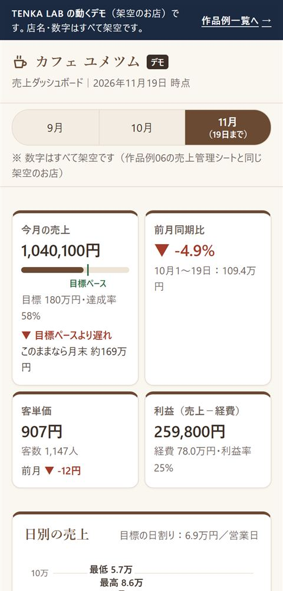
05 ／ 売上ダッシュボード（動くデモ）
売上管理シートの数字を、スマホでひと目で見られる画面に
本番にするときは：売上データの取り込み口と、同じデータを2回入れても増えない仕組みを足します
忙しい店主・複数店舗の経営者が、今月の売上・目標の達成ペース・利益を、スマホを開いて数秒で分かるようにする。
デモを触ってみる（カフェ ユメツムの売上ダッシュボードのデモ）
数字はすべて架空です。作品例06の売上管理シートと同じ架空のお店です。
06 ／ 売上管理シート（Excel）
毎日入れるだけで、月の売上・利益・目標の達成が分かる管理シート
本番にするときは：お店の売上区分・経費科目・目標に合わせて作り、共有のしかたを決めます
毎日の売上と経費を入れるだけで、月ごとの売上・利益・目標の達成具合が分かるようにし、店主が数字で判断できるようにする。
Excel ファイルをダウンロード（カフェ ユメツムの売上管理シート、xlsx 形式）
xlsx 形式・約72KB。Excel または Google スプレッドシートで開けます。


07 ／ 請求書の自動作成（動くデモ）
納品の明細から、取引先ごとの請求書をボタン1つで
本番にするときは：重複しない請求番号と発行の履歴、取消・返金と、お店と税理士さんで決めた税区分に合わせた計算を足します
小さなお店・個人事業の経理担当が、月末に取引先ごとに手で作っている請求書を、明細を確かめてボタンを押すだけで作れるようにする。インボイス（適格請求書）に必要な登録番号・税率ごとの合計と消費税額も紙面に載せる。
入力内容は保存も送信もされず、再読み込みで最初のデータに戻ります。請求書には「見本」の印が入ります。作品例05・06と同じ架空のお店です。
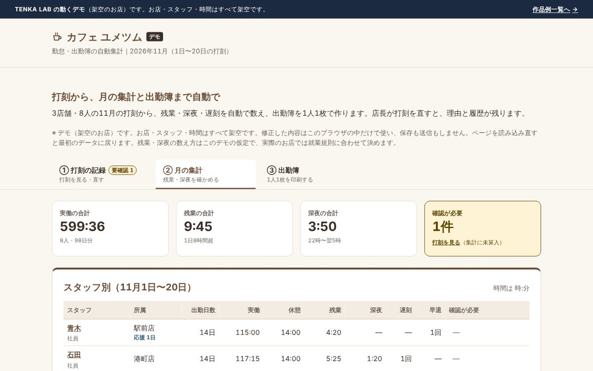
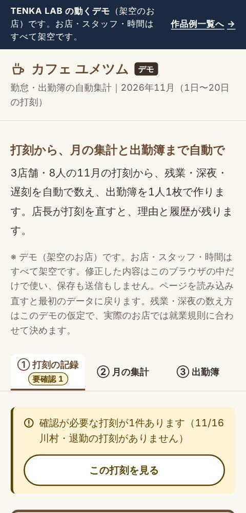
08 ／ 勤怠・出勤簿の自動集計（動くデモ）
3店舗・8人の打刻から、月の集計と出勤簿を自動で
本番にするときは：打刻の本人確認、上長の承認、雇用条件ごとの計算の決まりを足します
複数のお店を持つ飲食店・小売店で、店長や経理担当が月末に手で数えている実働・残業・深夜の時間と出勤簿づくりを、打刻の記録から自動にする。打刻を直すときは理由と履歴が残るようにする。
デモを触ってみる（カフェ ユメツムの勤怠・出勤簿の自動集計デモ）
修正は保存も送信もされず、再読み込みで最初のデータに戻ります。残業・深夜の数え方はデモの仮定です。給与の金額は出しません。作品例05〜07と同じ架空のお店です。


09 ／ お店のページ更新（動くデモ）
店主さんがスマホで、休み・売り切れ・お知らせを書き換えられるお店のページ
本番にするときは：公開中のページへの反映、公開前の確認画面、変更の履歴と元に戻す機能を足します
ホームページが無い、または作ったきりで更新できていない小さなお店に、「休み・売り切れ・お知らせ」を店主さんが自分で変えられる形を、触って確かめてもらう。
デモを触ってみる（定食と惣菜 ユキマドのお店のページ更新デモ）
変更はお使いのブラウザの中だけに保存され、どこにも送信されません。実際のお店のページの作り方はご相談のうえご提案します。
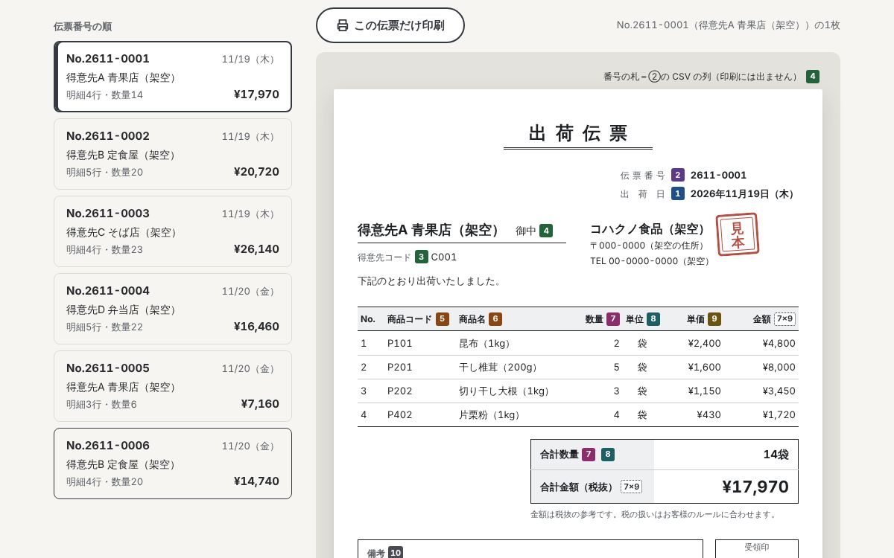

10 ／ CSVから伝票を一括作成（動くデモ）
システムから出したCSVを読み込むだけで、伝票番号ごとの出荷伝票がまとめてできあがる
本番にするときは：お手元のCSVの文字コード・件数・重複した番号に合わせ、取込前の確認を足します
CSVを見ながら伝票に手で写している事務作業を、「読み込んで印刷するだけ」にできることを、触って確かめてもらう。
デモを触ってみる（コハクノ食品のCSVから伝票を一括作成するデモ）
読み込んだCSVはお使いのブラウザの中だけで読み、どこにも送信も保存もしません。金額は税抜の参考です。実際のお仕事では、お手元のExcel（VBA）やGoogleスプレッドシート（GAS）で作ります。


11 ／ 在庫・発注の管理（動くデモ）
入荷と使った量を記録するだけで、足りない材料が色で分かり、発注リストが自動でできる
本番にするときは：共有の保存先とログイン、複数人が同時に記録してもずれない仕組みを足します
「材料が切れてから気づく」「発注が店長の頭の中にしかない」を、記録するだけで見える形にできることを、触って確かめてもらう。
デモを触ってみる（焼き菓子と珈琲 ハルツグの在庫・発注の管理デモ）
記録はお使いのブラウザの中だけに保存され、どこにも送信されません。金額は税抜の参考です。実際のお仕事では、Googleスプレッドシート（GAS）やExcelで作ります。
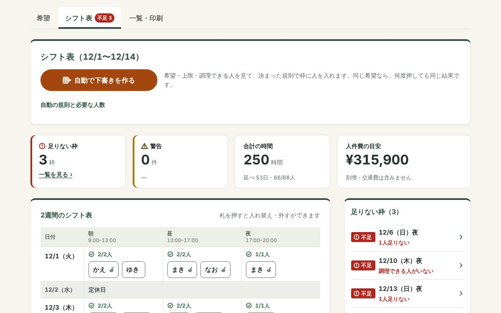

12 ／ シフト表づくり（動くデモ）
スタッフの希望（○△×）から、シフトの下書きを自動で作る
本番にするときは：スタッフごとのログイン、雇用条件に合わせた上限の決まり、変更の履歴を足します
「毎月のシフトづくりに店長が何時間もかかる」を、希望を集めてボタン1つで下書きまで進め、直すところだけ手で直す形にできることを、触って確かめてもらう。
デモを触ってみる（弁当と惣菜 ツグミヤのシフト表づくりデモ）
入力はお使いのブラウザの中だけに保存され、どこにも送信されません。時給・人件費は架空の参考値です。実際のお仕事では、Googleフォーム＋スプレッドシート（GAS）やExcelで作ります。
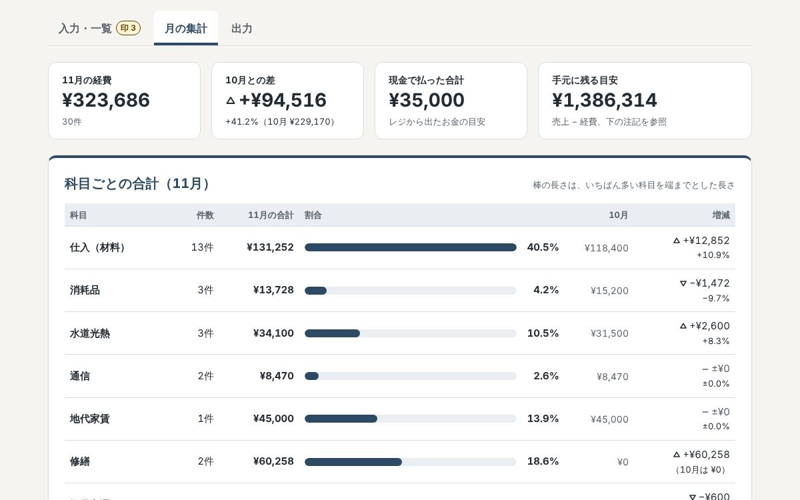

13 ／ 経費の記録と月の集計（動くデモ）
レシートをその場で入力すると、科目ごとの合計が自動で出る
本番にするときは：共有の保存先とレシート画像の保管を足し、科目の分け方を税理士さんに合わせます
「月末にレシートの束を整理するのが大変」を、その場で入力して月の合計と税理士さんに渡すCSVまで自動で出せる形にできることを、触って確かめてもらう。
デモを触ってみる（焼き菓子と喫茶 ミズハラ堂の経費の記録デモ）
入力はお使いのブラウザの中だけに保存され、どこにも送信されません。金額・支払先は架空です。会計・税務の判断はしません。実際のお仕事では、Googleフォーム＋スプレッドシート（GAS）やExcelで作ります。
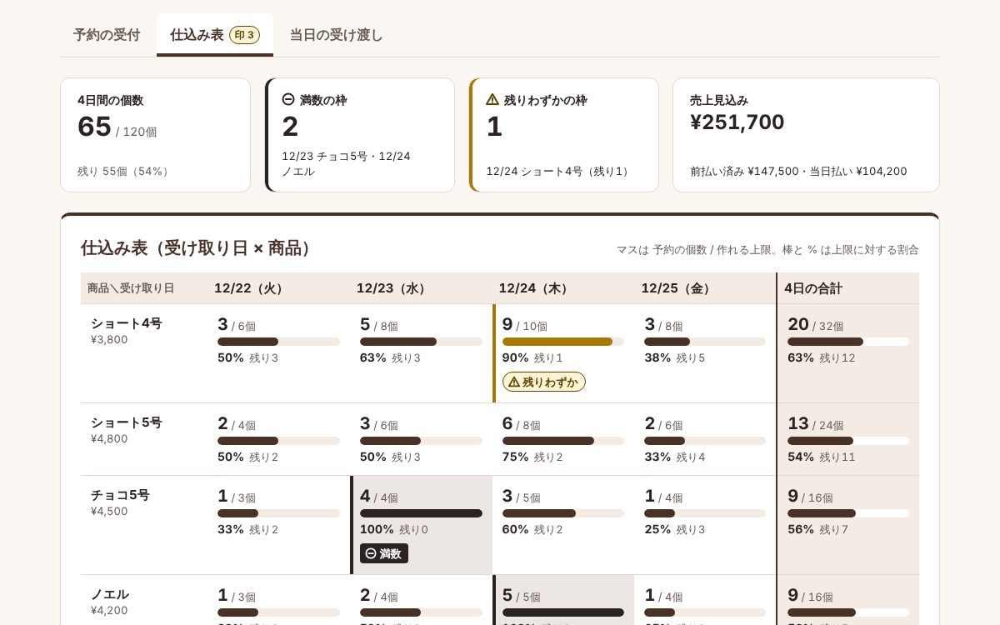
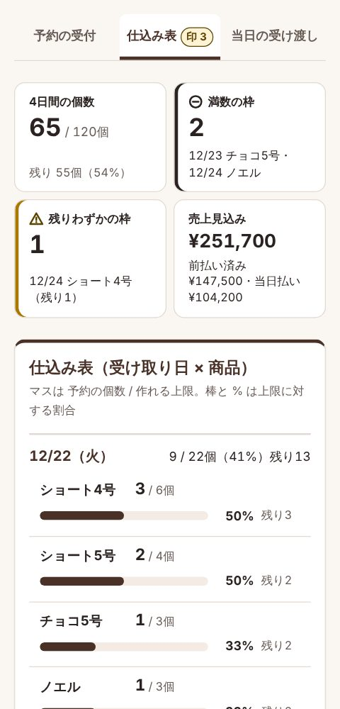
14 ／ 予約注文の受付と仕込み表（動くデモ）
予約を入れると、受け取り日ごとの仕込み数が自動で出る
本番にするときは：共有の保存先、残り1個を同時に予約されない仕組み、受付番号と取消・変更を足します
「12月の予約の紙の束から、作る数を数え直すのが大変」を、予約を入れるだけで仕込み数と当日の受け渡し表まで出せる形にできることを、触って確かめてもらう。
デモを触ってみる（洋菓子 トキワダの予約注文と仕込み表デモ）
入力はお使いのブラウザの中だけに保存され、どこにも送信されません。お店・商品・予約は架空で、お名前は仮名だけです。実際のお仕事では、Googleフォーム＋スプレッドシート（GAS）やExcelで作ります。
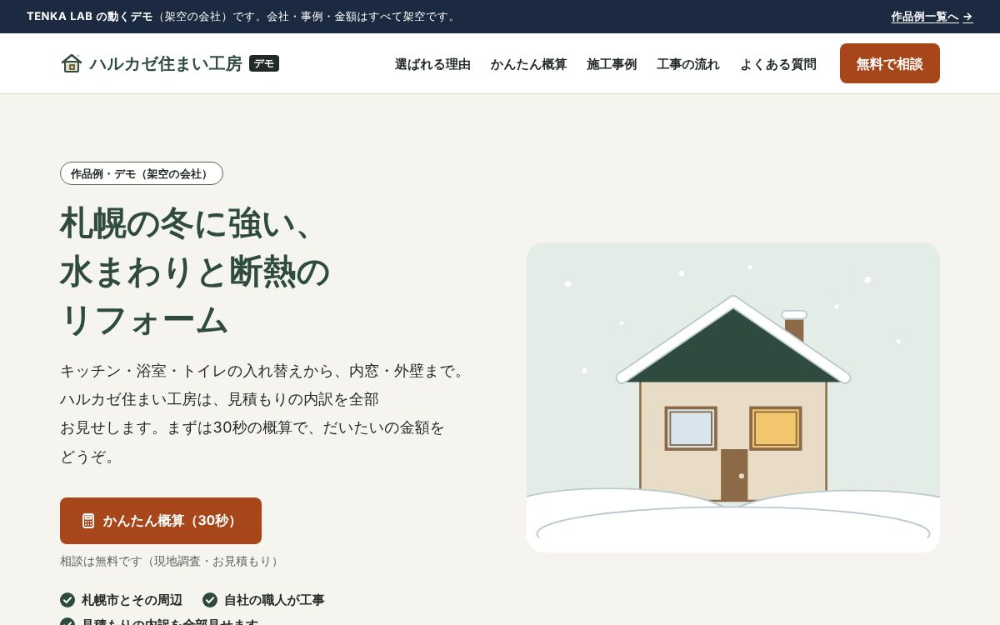

15 ／ 工務店のホームページと概算（動くデモ）
場所と広さを選ぶと、目安の金額と工期がその場で出る
本番にするときは：会社の単価表・写真・文章に差し替え、相談の届け先とつないで公開します
「だいたいいくら？」がわからず問い合わせをためらうお客様に、30秒で目安を見せて、そのまま相談につなげる。ホームページを「見るだけ」から「問い合わせが増える」ものにする仕掛けの見本。
デモを触ってみる（ハルカゼ住まい工房のリフォーム概算シミュレーター）
入力はどこにも送信されません。会社・事例・金額はすべて架空です。実際のお仕事では、会社の単価表（Excel・スプレッドシート）から作り、相談はメール・LINEに届くようにします。


16 ／ スマホのスタンプカード（動くデモ）
お客様は会員証を見せるだけ。お店は金額を入れて押すだけ
本番にするときは：会員のログイン、不正な付与と特典の二重使用の防止、押した履歴を足します
紙のスタンプカードをなくす・忘れるお客様をなくし、再来店を増やす。有料のアプリを使わずに、お店だけの会員証を持つ仕掛けの見本。
デモを触ってみる（パンの店 ネリマメ堂のスマホのスタンプカード）
入力はお使いのブラウザの中だけに保存され、どこにも送信されません。お店・会員・特典はすべて架空です。実際のお仕事では、LINE やホームページから会員登録し、QR の読み取りとスプレッドシート・データベースへの保存につなぎます。
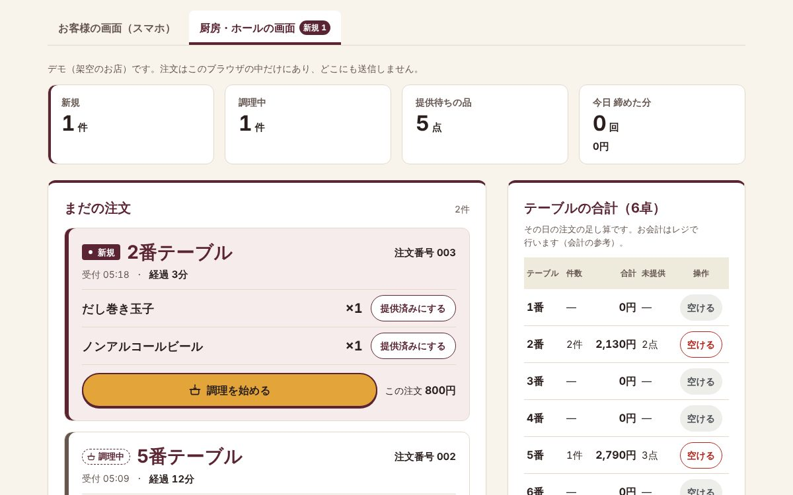

17 ／ テーブル注文（動くデモ）
お客様は席で選んで注文するだけ。厨房の一覧にそのまま届く
本番にするときは：共有の保存先、通信が切れても注文が重ならない仕組み、取消・変更を足します
注文を取りに行く手間と聞き間違いを減らし、少ない人数でも店を回せるようにする。高い注文端末を入れずに、お客様のスマホで注文を受ける仕組みの見本。
デモを触ってみる（定食とおばんざい ミトリ堂のテーブル注文）
注文はお使いのブラウザの中だけに保存され、どこにも送信されません。お店・メニュー・価格はすべて架空です。お会計・お支払いはしません。実際のお仕事では、席の QR から注文画面を開き、データベースへの保存と厨房のタブレットにつなぎます。
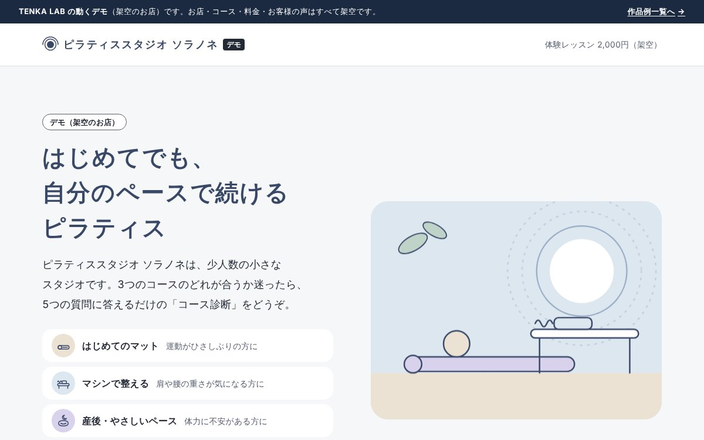

18 ／ 診断つきのLP（動くデモ）
5つの質問に答えるだけ。合うコースが分かって、体験へ
本番にするときは：お店のコース・写真・文章に合わせ、申し込みの届け先とつないで公開します
「どのコースが合うか分からない」で申し込みをやめてしまうお客様を、診断で体験レッスンまで案内する。LP に「＋診断」を付けて反応を上げる見本。
デモを触ってみる（ピラティススタジオ ソラノネのコース診断つきのLP）
診断の答えはどこにも送信されません。お店・コース・料金・お客様の声はすべて架空です。実際のお仕事では、質問と点数をお店に合わせて作り、申し込みのフォームや LINE につなぎます。
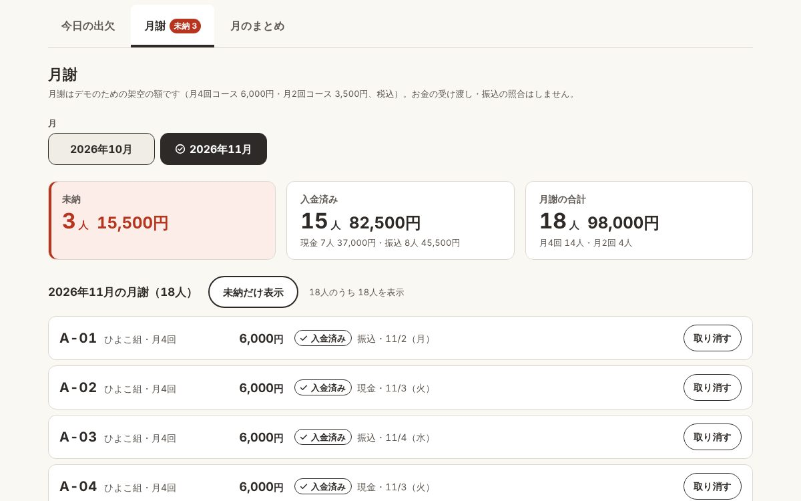

19 ／ 教室の出欠と月謝の管理（動くデモ）
出欠はボタンで、振替の残りは自動で。月謝の未納がひと目で分かる
本番にするときは：先生ごとのログインと権限、記録の履歴、生徒の情報の削除・訂正の手順を足します
紙の名簿と月謝袋で管理している小さな教室の先生が、出欠・振替・月謝の未納をスマホひとつで確かめられるようにする見本。
デモを触ってみる（子ども書道教室 ハナツゲの出欠と月謝の管理）
記録はお使いのブラウザの中だけに保存され、どこにも送信されません。教室・生徒・金額はすべて架空です。お金の受け渡し・振込の確認はしません。実際のお仕事では、保護者の欠席連絡フォームや LINE、スプレッドシートへの保存につなぎます。
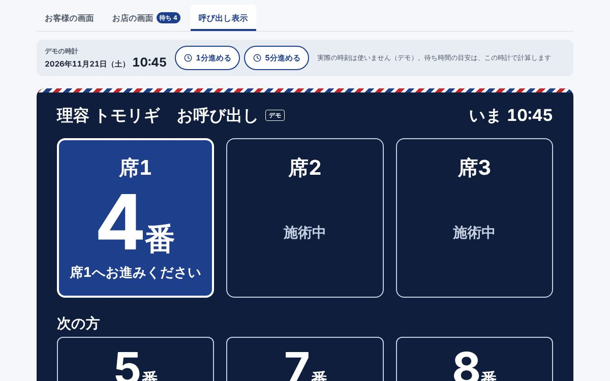

20 ／ 順番待ちの受付と呼び出し（動くデモ）
番号を取ると、前の人数と待ち時間の目安が出る。お店は席ごとに呼ぶだけ
本番にするときは：共有の保存先、番号の二重発行の防止、順番が近づいたときのお知らせを足します
予約なしで来るお客様が店先で並び、何分待ちか分からない理容室・飲食店・整体などで、番号の受付・呼び出し・待合の表示をひとつにまとめる見本。
デモを触ってみる（理容 トモリギの順番待ちの受付と呼び出し）
記録はお使いのブラウザの中だけに保存され、どこにも送信されません。お店・番号・待ち時間はすべて架空です。音・通知は出しません。実際のお仕事では、店先の QR コードで自分のスマホから番号を取る、順番が近づいたら LINE でお知らせ、混み具合をホームページに出す、などにつなぎます。


21 ／ メニューの原価計算と値付け（動くデモ）
仕入れ値を変えると、影響のあるメニューの原価率がすぐ変わる。値上げの目安も10円単位で
本番にするときは：お店の食材・レシピに合わせ、共有の保存先と仕入れ値の変更の履歴を足します
食材の値上がりが続くなか、「どのメニューがいくら損しているか」「値上げをいくらにすればよいか」を、勘ではなく数字で決められるようにする飲食店向けの見本。
デモを触ってみる（洋食 ミナトビのメニューの原価計算と値付け）
入れた値はお使いのブラウザの中だけに保存され、どこにも送信されません。お店・食材・値段はすべて架空です。消費税は10%だけで計算しています（デモの仮定）。実際のお仕事では、お店の Excel・スプレッドシートで同じ仕組みを作る、仕入れ先の請求書の CSV から値段を取り込む、などにつなぎます。
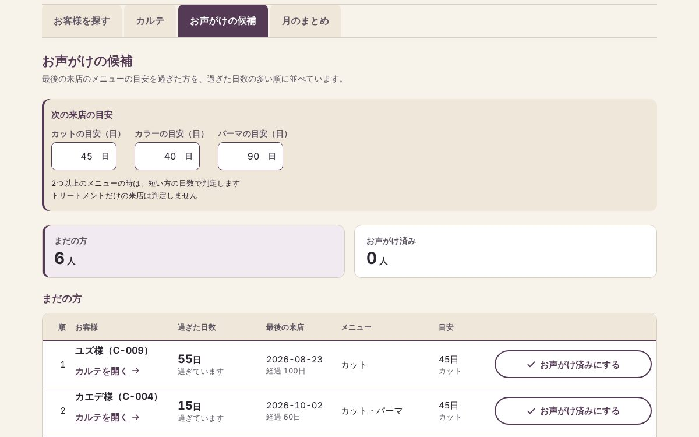
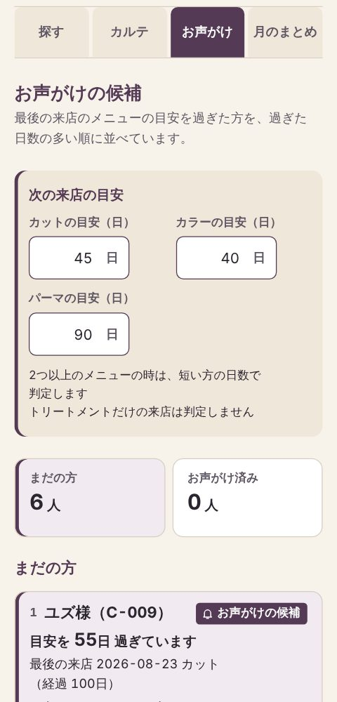
22 ／ 顧客カルテとお声がけ（動くデモ）
前回のカラーの番号とメモがすぐ出る。次の来店の目安を過ぎた方が一覧で分かる
本番にするときは：スタッフのログインと権限、誰がいつ直したかの記録、お客様の情報の同意・削除・訂正の手順を足します
紙のカルテを探す手間をなくし、「しばらく来ていないお客様」に気づけるようにする、個人の美容室・サロン向けの見本。
デモを触ってみる（美容室 ソヨギの顧客カルテと再来店のお声がけ）
入れた値はお使いのブラウザの中だけに保存され、どこにも送信されません。お店・お客様・記録はすべて架空です。お声がけの連絡（LINE・メールなど）はこのデモからは送りません。実際のお仕事では、お店の予約の仕組みやスプレッドシートとつなぐ、LINE 公式アカウントでお知らせを送る、などをご相談のうえ作ります。


23 ／ お客様アンケートの集計（動くデモ）
答えた分だけ、項目ごとの平均と分布がすぐ出る。点数の低い声から読んで対応できる
本番にするときは：回答の受け取り口と共有の保存先、同じ回答が2回入らない仕組みを足します
紙やフォームで集めたアンケートを「集めたまま」にせず、毎月の点数の変化と、低い点数の声に気づけるようにする、喫茶店・飲食店向けの見本。
デモを触ってみる（喫茶 カサネドのお客様アンケートの集計と見える化）
入れた値はお使いのブラウザの中だけに保存され、どこにも送信されません。お店・回答はすべて架空です。実際のお仕事では、お店の Googleフォームやスプレッドシートの回答を読み込み、毎月の集計を自動で作る、などをご相談のうえ作ります。
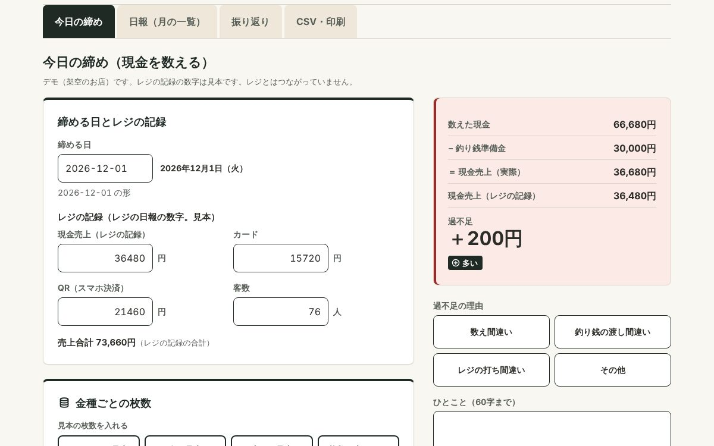

24 ／ レジ締めと日報（動くデモ）
お札と硬貨の枚数を入れるだけで、合計とレジの記録との過不足がその場で出る。締めた分が月の日報になる
本番にするときは：共有の保存先、締めた日を後から変えられない仕組み、訂正の履歴を足します
閉店後に紙と電卓で行うレジ締めを、数えた枚数を入れるだけにして、過不足の理由を毎日残せるようにする、飲食店・小売店向けの見本。複数店舗の経理を見てきた経験から、過不足と日報の書き漏れが起きにくい形にしました。
デモを触ってみる（おむすびと豚汁 ヒナタギのレジ締めの現金の数え表と日報）
入れた値はお使いのブラウザの中だけに保存され、どこにも送信されません。お店・数字はすべて架空です。レジ・POS とはつながっていません。実際のお仕事では、お店の今の締めの紙・レジの日報に項目を合わせ、スプレッドシートに日報を自動でためる、などをご相談のうえ作ります。
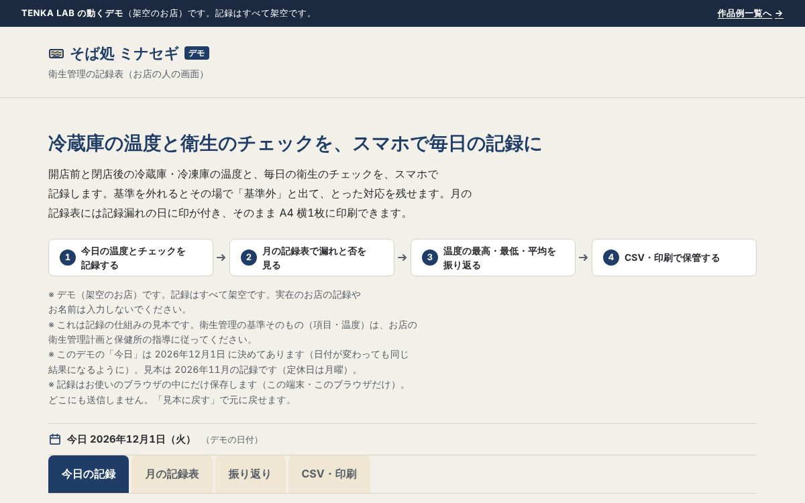
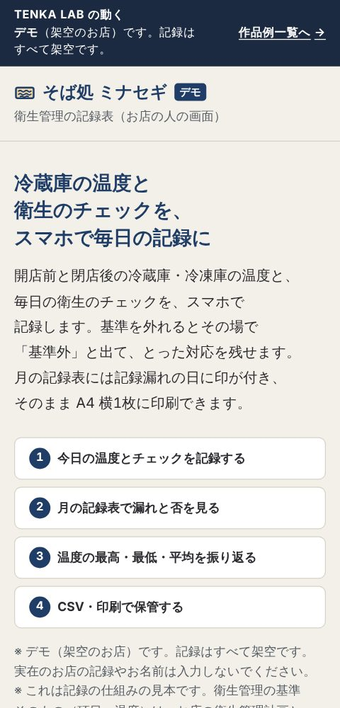
25 ／ 衛生管理の記録（動くデモ）
冷蔵庫・冷凍庫の温度と毎日の衛生のチェックをスマホで記録。基準を外れるとその場で知らせ、月の記録表を A4 横1枚に
本番にするときは：記録した担当者の名前、後から書き換えられない仕組み、記録の長期保存を足します
飲食店で毎日つける「HACCP の考え方を取り入れた衛生管理」の紙のチェック表を、スマホの記録に置き換える見本。書き漏れに気づきやすく、月の記録をすぐ探して印刷できる形にしました。
入れた値はお使いのブラウザの中だけに保存され、どこにも送信されません。お店・記録はすべて架空です。温度センサーとはつながっていません。衛生管理の基準そのものは、お店の衛生管理計画と保健所の指導に従います。実際のお仕事では、お店の今のチェック表に項目を合わせ、スプレッドシートに毎日の記録をためる、などをご相談のうえ作ります。
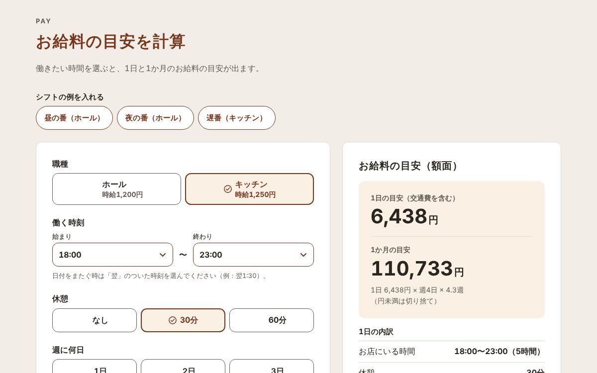
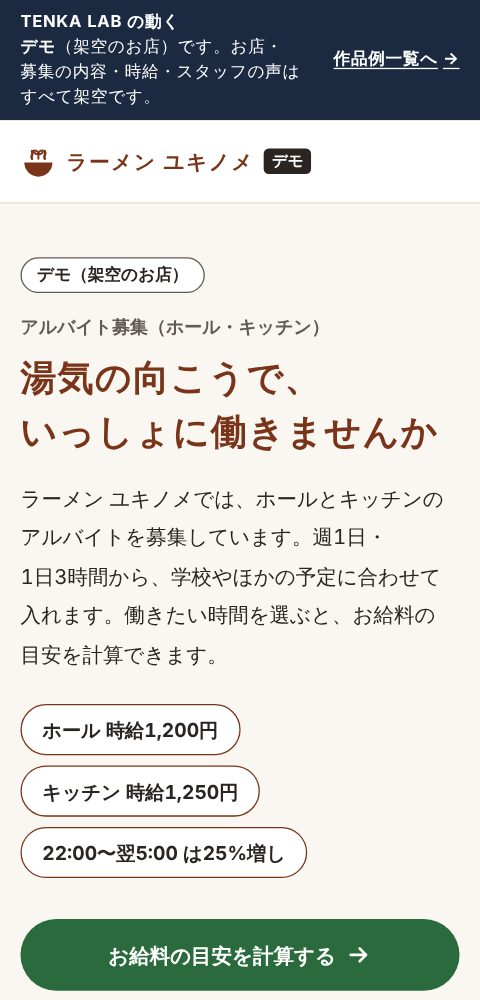
26 ／ アルバイト募集のページ（動くデモ）
職種・1日の流れ・スタッフの声を伝える求人のページ。働きたい時間を選ぶと、深夜の割増と交通費を含めた1日・1か月のお給料の目安が出ます
本番にするときは：お店の時給・手当の決まりに合わせて計算を直し、写真・文章と応募の受け付け方を足します
人手不足に悩む飲食店向けの、求人サイトに頼りすぎない自前の募集ページの見本。応募する前に「自分の働き方だといくらくらいか」が分かるので、時間帯の合う人からの応募につながる形にしました。
デモを触ってみる（ラーメン ユキノメのアルバイト募集とお給料の目安）
選んだ値はどこにも送信されません。お店・時給・スタッフの声はすべて架空です。表示はあくまで額面の目安で、実際のお給料は雇用契約の内容で決まります。実際のお仕事では、お店の時給・手当・端数の扱いを聞き取って合わせ、応募の受け付け方（電話・LINE・求人サイトなど）もご相談のうえ作ります。
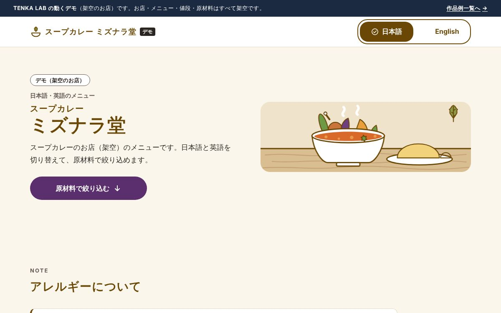

27 ／ 日本語・英語のメニュー（動くデモ）
海外からのお客様にも読めるメニューのページ。日本語と英語をボタンで切り替え、避けたい原材料（特定原材料9品目）を選ぶと使っていない品だけを見られます
本番にするときは：原材料の表示に責任者の確認と更新の履歴を足し、英文の確認のしかたを決めます
観光のお客様が多い飲食店向けの、注文はせず「見るだけ」のメニューの見本。言葉が分からなくても、食べられない原材料を選ぶだけで候補が絞れる形にしました。
デモを触ってみる（スープカレー ミズナラ堂の日本語・英語のメニューと原材料の絞り込み）
選んだ値はどこにも送信されません。お店・メニュー・値段・原材料はすべて架空です。原材料の表示の内容はお店が決めるもので、TENKA LAB は判断しません。英文はデモ用で、実際のお仕事では、お店の原材料を聞き取って合わせ、英文の確認のしかたもご相談のうえ作ります。
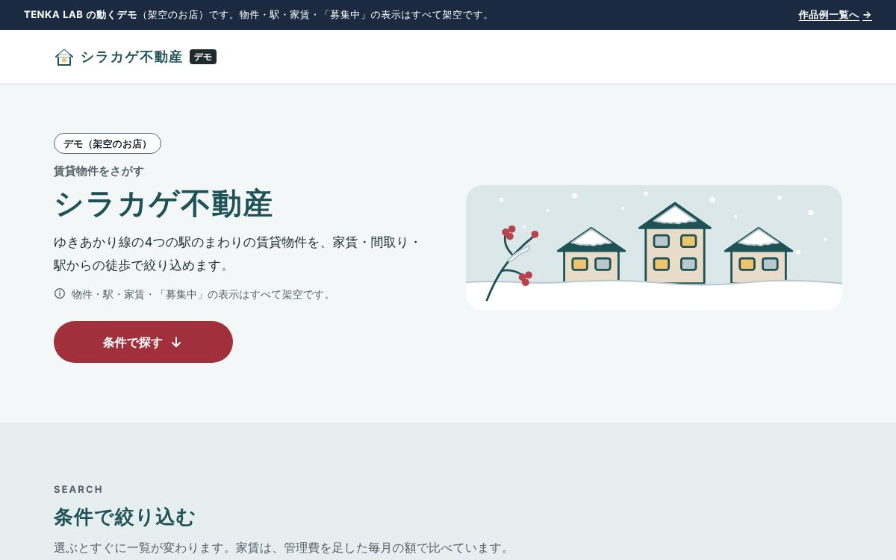
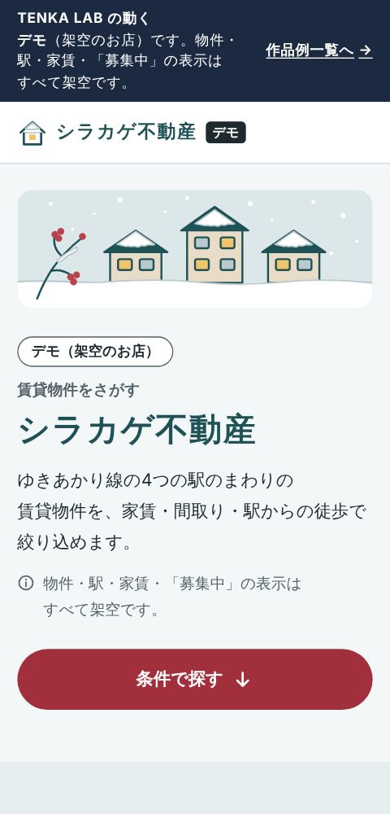
28 ／ 賃貸物件の一覧と絞り込み（動くデモ）
街の不動産屋のホームページに置く物件探しのページ。毎月の家賃（管理費込み）・間取り・駅からの徒歩で絞り込み、初期費用の目安まで見られます
本番にするときは：物件の情報を更新する担当と手順を決め、表示の確認のしかたをご相談します（表示の内容はお店がご判断ください）
ポータルサイトに載せるだけでなく、自分のお店のページでも物件を探してもらいたい街の不動産屋さん向けの見本。部屋を探す人が最初に決める「毎月いくらまで」「何部屋」「駅から歩けるか」の3つを一番上に置きました。
デモを触ってみる（シラカゲ不動産の賃貸物件の一覧と絞り込み）
選んだ値はどこにも送信されません。お店・物件・駅・家賃・「募集中」の表示はすべて架空です。初期費用は目安で、実際の金額は物件ごとの契約の内容で決まります。実際のお仕事では、お店の物件の情報の持ち方（表計算・管理ソフトなど）を聞き取り、更新のしかたもご相談のうえ作ります。
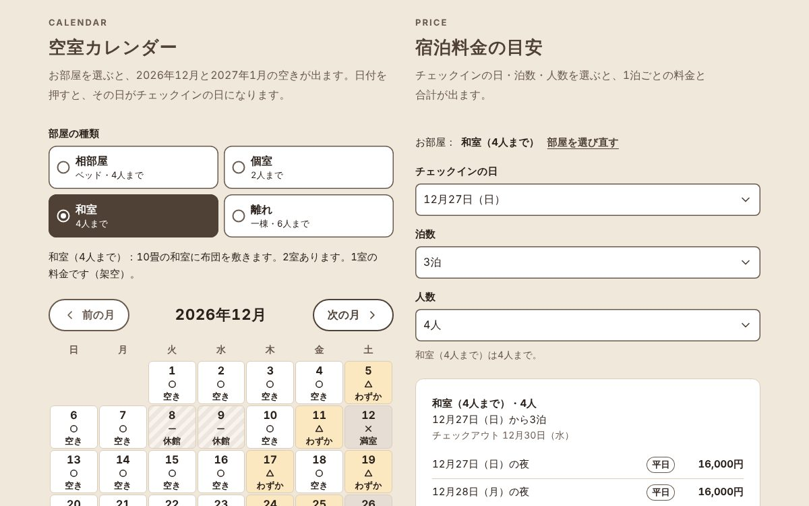
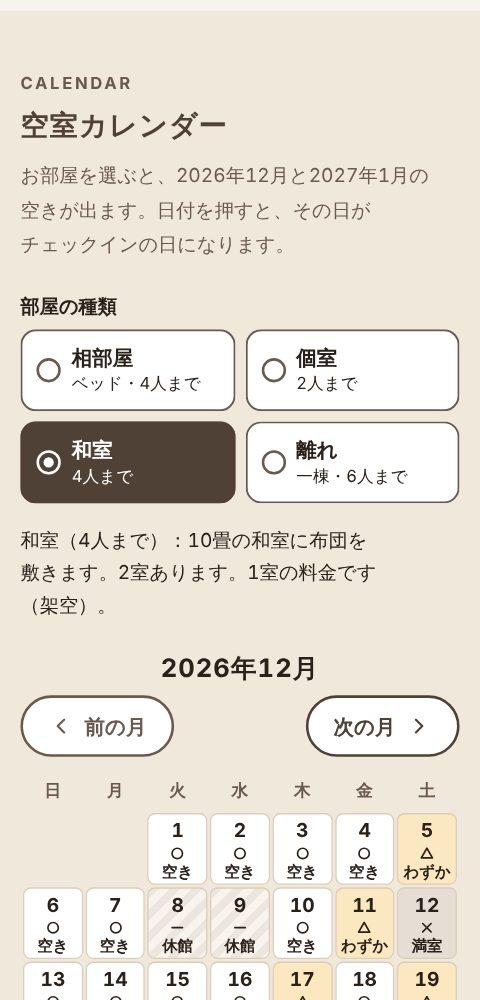
29 ／ 空室カレンダーと宿泊料金の目安（動くデモ）
小さな宿のホームページに置く空室と料金のページ。部屋を選ぶと空き状況が、日にち・泊数・人数を選ぶと1泊ごとの料金と合計の目安が出ます
本番にするときは：空室を更新する担当と手順（表計算・管理画面など）を決め、予約サイトとの二重管理の減らし方をご相談します
空室を「お問い合わせください」としか書けていない小さな宿向けの見本。泊まる人が知りたい「いつ空いているか」「何泊・何人でいくらくらいか」を、宿のページだけで分かるようにしました。
デモを触ってみる（ゲストハウス ヒサメノの空室カレンダーと宿泊料金の目安）
選んだ値はどこにも送信されません。お店・部屋・空室・料金はすべて架空で、予約はできません。料金は目安で、宿泊税などの扱いは自治体のきまりに合わせてお店と決めます。実際のお仕事では、予約フォーム・電話・LINE・予約サイトへのつなぎ方もご相談のうえ作ります。
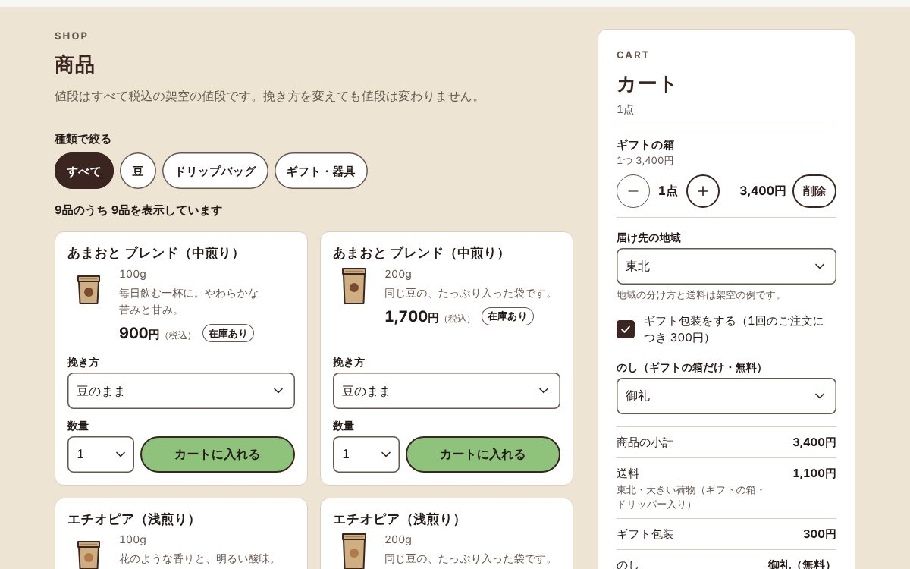
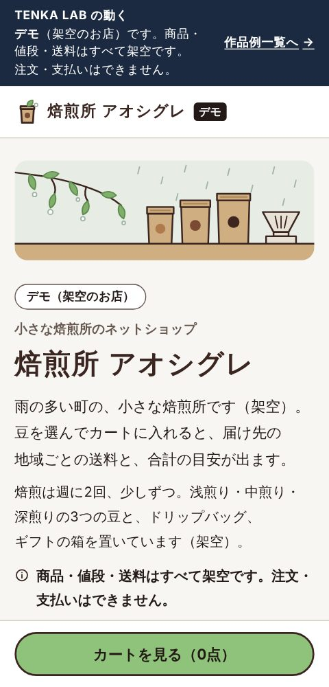
30 ／ 小さなネットショップ（動くデモ）
コーヒー豆の小さなお店のネットショップ。商品をカートに入れて届け先の地域を選ぶと、送料・ギフト包装・合計の目安と「送料無料まであと◯円」が出ます
本番にするときは：商品・在庫・送料表をお店の内容に差し替え、決済とお届け先の入力はネットショップのサービスかお店と決めた仕組みにつなぎます
「SNS で売っているが、注文のたびに送料を手で計算している」小さなお店向けの見本。お客様が自分で送料と合計の目安を確かめられるようにしました。
選んだ値はどこにも送信されません。お店・商品・値段・送料はすべて架空で、注文・支払いはできません。特定商取引法に基づく表記・返品の決まりは、実際のページではお店の情報で載せます。
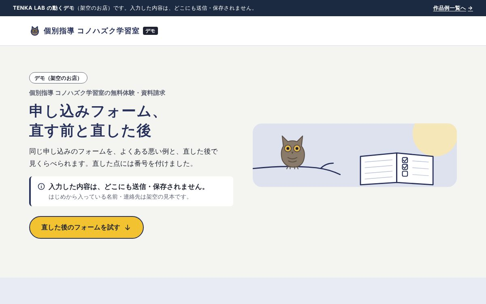
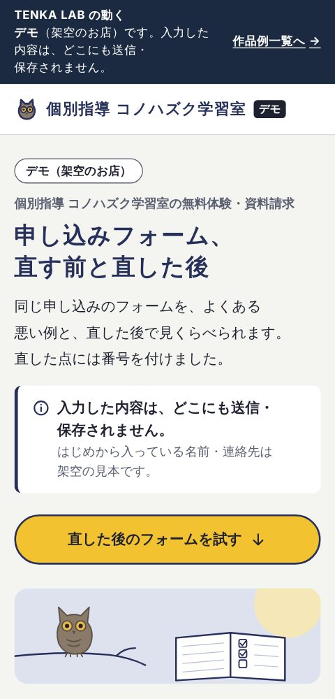
31 ／ 申し込みフォームの改善（動くデモ）
体験授業・資料請求の申し込みフォームを、よくある悪い例と直した後で見くらべられます。直した点には番号を付けました
本番にするときは：項目と文言をお店の内容に合わせ、送信先（メール・フォームのサービスなど）をお店と決めてつなぎます
「フォームを開いても申し込みまで進んでもらえない」というご相談向けの見本。どこを直すと入力しやすくなるかを、同じフォームの前後で見ていただけます。
入力した内容はどこにも送信・保存されません。お店・名前・連絡先はすべて架空の見本です。申し込みが増える度合いはお店やページによって違うため、数字のお約束はしていません。
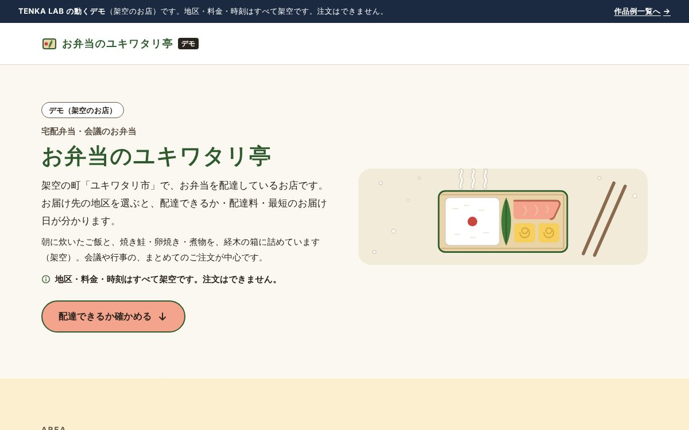
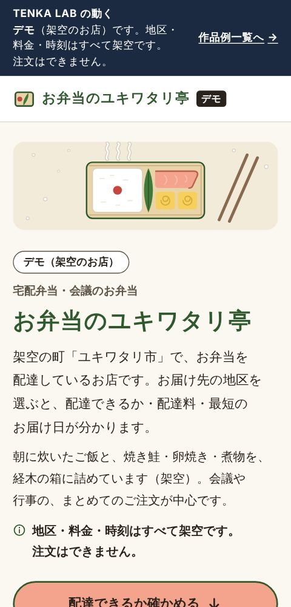
32 ／ 配達エリアとお届け日の確認（動くデモ）
お届け先の地区・個数・希望日を選ぶと、配達できるか・配達料・最短のお届け日がその場で分かります
本番にするときは：地区・配達料・締めの時刻・定休日をお店の決まりに合わせます。住所や郵便番号からの判定もできます
「配達できますか？」「いつ届きますか？」という電話やメッセージでのお問い合わせを減らしたい、宅配・仕出しのお店向けの見本です。
選んだ内容はどこにも送信・保存されません。お店・地区・料金・時刻はすべて架空で、注文はできません。
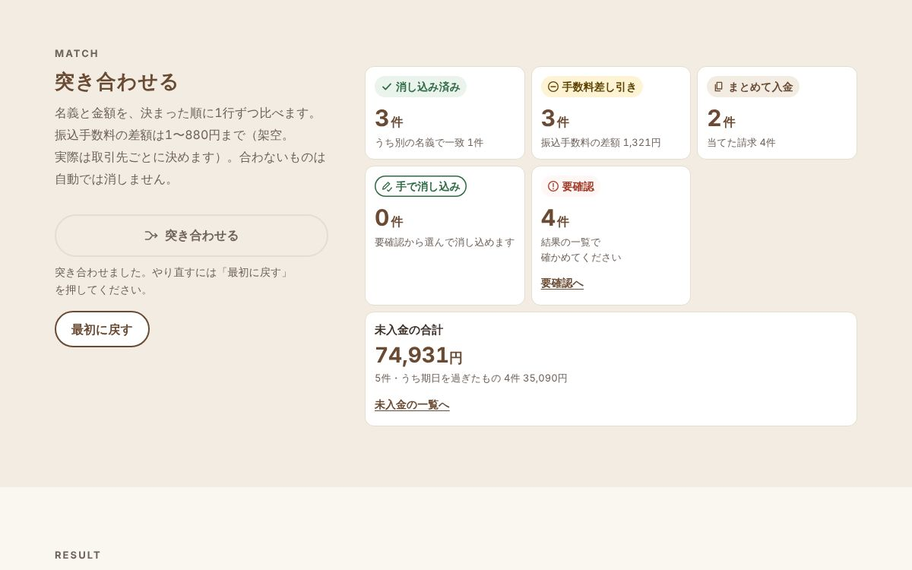
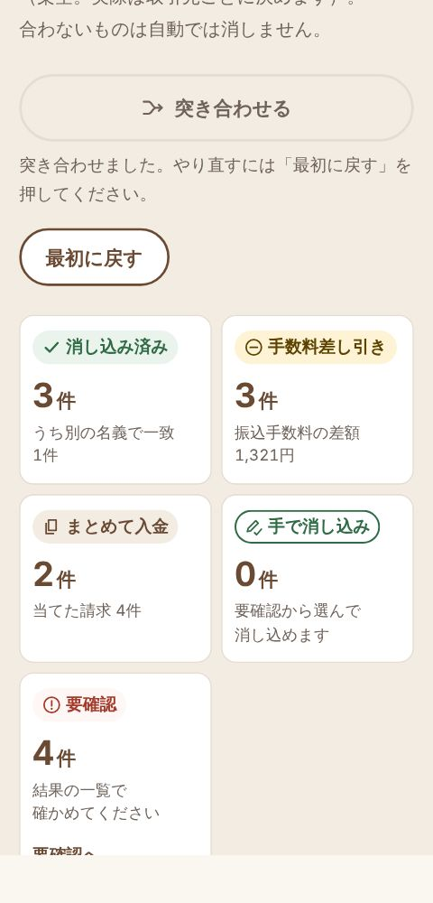
33 ／ 請求と入金の突き合わせ（動くデモ）
請求の一覧と通帳の入金を1行ずつ突き合わせ、合ったもの・振込手数料の差し引き・まとめての入金・要確認に分けます
本番にするときは：ネットバンキングの入金の CSV を、Googleスプレッドシートか Excel に読み込む形にします。手数料の差額をどこまで認めるかはお店で決めます
「毎月の入金の確認に時間がかかる」「どの請求の入金か分からない」というご相談向けの見本。請求書を出した後の、入金の確認までを見ていただけます。
操作した内容はどこにも送信・保存されません。お店・取引先・名義・金額はすべて架空です。会計上の扱いは税理士の方とご相談ください。
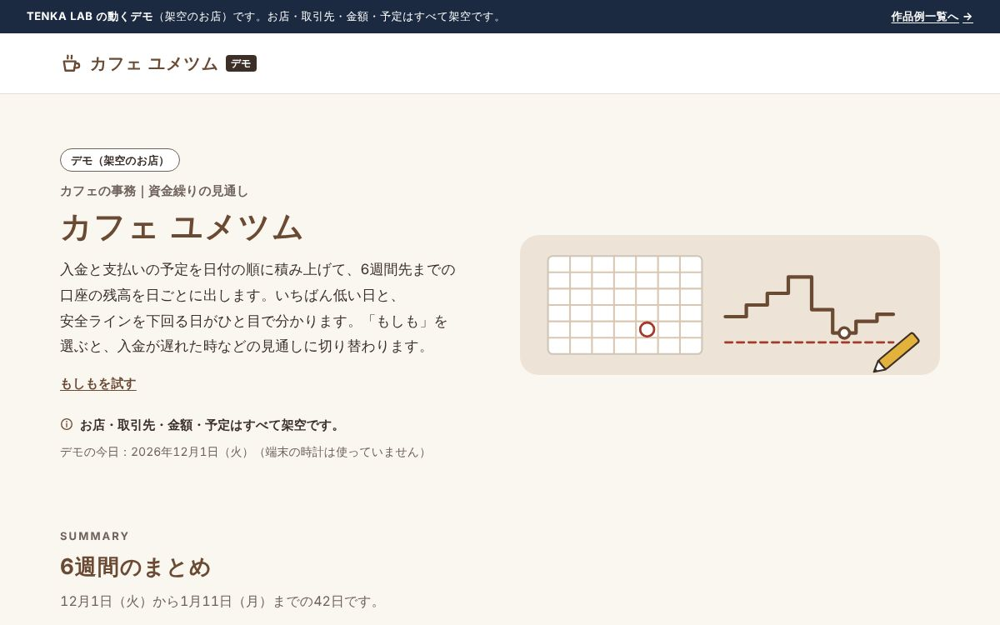
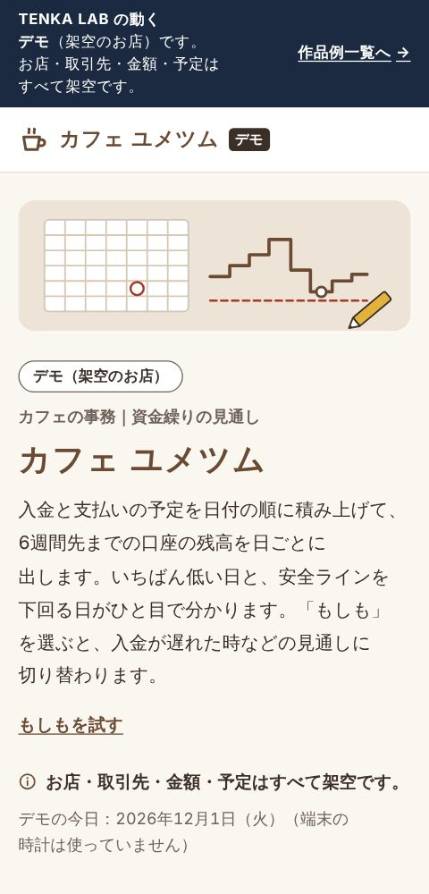
34 ／ 入金と支払いの予定から先の残高（動くデモ）
入金と支払いの予定を日付の順に積み上げ、6週間先までの残高と、いちばん低い日・安全ラインを下回る日を出します
本番にするときは：予定を入れると、残高の推移と注意の日が出る表を、Googleスプレッドシートか Excel で作ります。資金の手当てや税の判断はお店と専門家の方で決めます
「入金と支払いの日がずれて、月の途中で口座の残高が足りなくなる日がある」というご相談向けの見本。請求書・入金の確認（作品例33）の先の、見通しまでを見ていただけます。
操作した内容はどこにも送信・保存されません。お店・取引先・金額・予定はすべて架空です。資金繰りや税の判断は専門家の方とご相談ください。
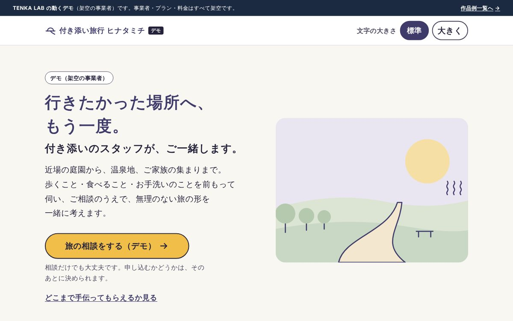
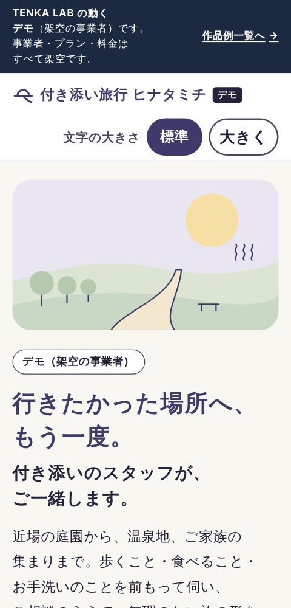
35 ／ 年配の方とご家族向けの読みやすいLP（動くデモ）
大きな文字と文字の大きさの切り替え、「どこまで手伝ってもらえるか」の早見表、日数・人数で変わる料金の目安を、申し込みボタンの手前で見せます
本番にするときは：実際のプラン・料金・お手伝いの範囲と写真に差し替え、お問い合わせの受け口（フォームやLINEのボタン）をつなぎます
「年配の方やご家族が、読んで安心して相談できるページにしたい」というご相談向けの見本。申し込む前に気になる「どこまで手伝ってもらえるか・いくらくらいか・当日の流れ」を先に見せます。
デモを触ってみる（付き添い旅行 ヒナタミチの付き添いつき旅行のLP）
操作した内容はどこにも送信・保存されません。事業者・プラン・料金はすべて架空です。医療・介護のサービスの見本ではありません。
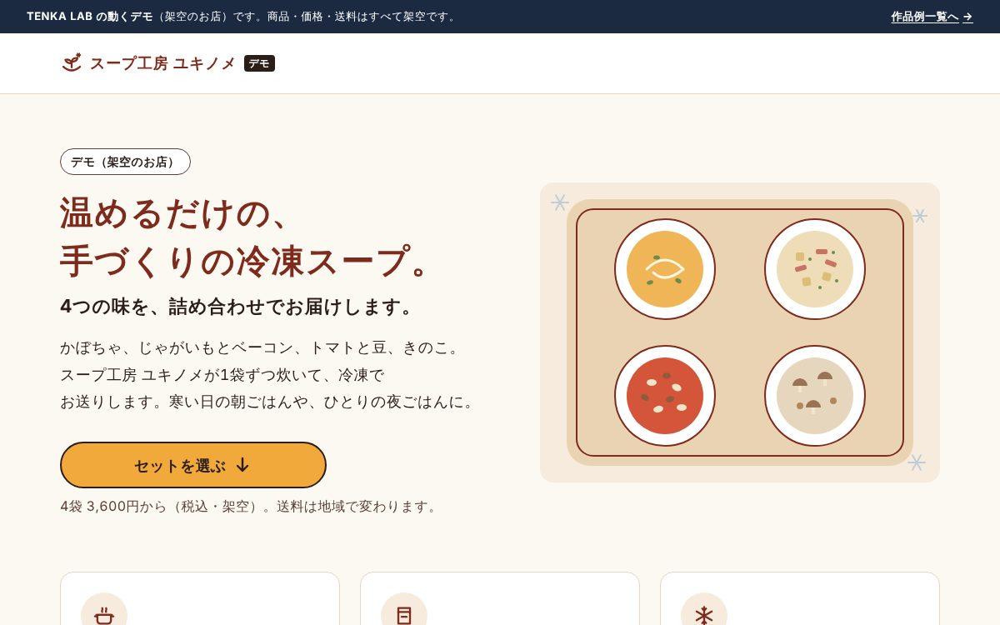
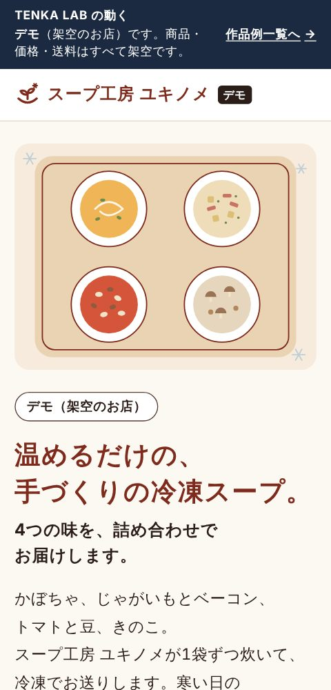
36 ／ お取り寄せ食品の商品LP（動くデモ）
セット・ギフト包装・お届け地域を選ぶだけで、届く中身・送料・合計・お届けの目安と、原材料とアレルゲンの表を、購入ボタンの手前で見せます
本番にするときは：実際の商品・写真・価格と送料・原材料の表示に差し替え、購入ボタンをお店のカート（Shopify・BASE など）につなぎます
「通販の商品ページで、買う前の迷いを減らしたい」というご相談向けの見本。「何が届くか・いくらで、いつ届くか・どう食べて、どう保存するか」を、購入ボタンを押す前に分かる並びにしました。
デモを触ってみる（スープ工房 ユキノメの冷凍スープの詰め合わせのLP）
操作した内容はどこにも送信・保存されません。お店・商品・価格・送料・原材料の表示はすべて架空です。
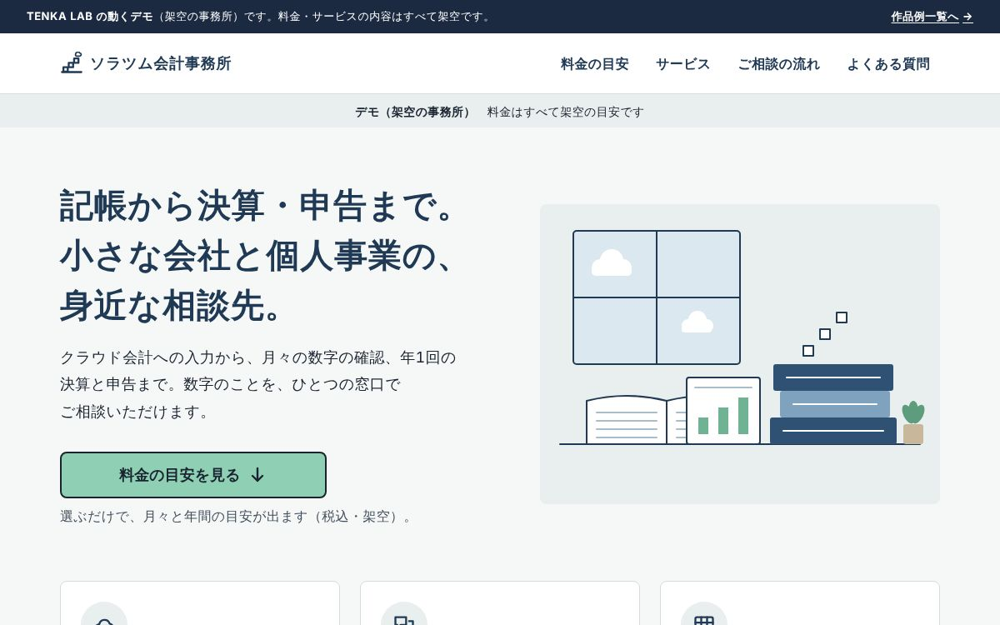
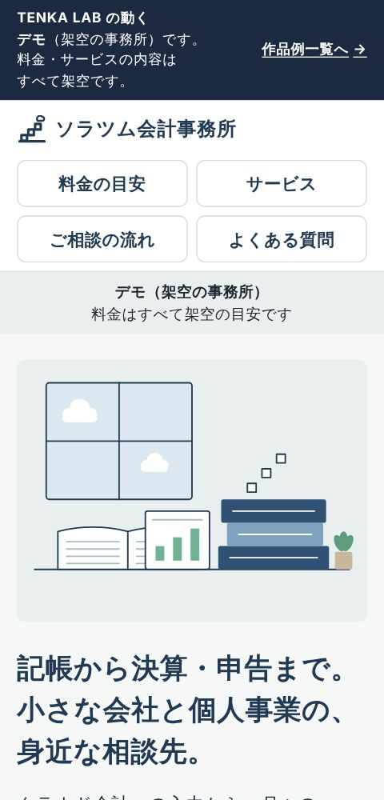
37 ／ 士業・事務所のホームページ（動くデモ）
事業の形・年間の売上・記帳の方法・面談の回数を選ぶだけで、月々の顧問料・記帳代行料・決算と申告の料金・年間の合計の目安と内訳を、問い合わせの前に見せます
本番にするときは：事務所の料金表と文章（事務所がご用意・確認）に差し替え、ご相談のボタンをお問い合わせフォーム・予約の仕組みにつなぎます
「料金が分かりにくく、問い合わせの前に帰られてしまう」という士業・事務所のご相談向けの見本。サービスの説明・料金の目安・ご相談の流れ・よくある質問を1枚にまとめ、相談のハードルを下げる並びにしました。
デモを触ってみる（ソラツム会計事務所の顧問料の目安が出るホームページ）
操作した内容はどこにも送信・保存されません。事務所・サービス・料金はすべて架空です。
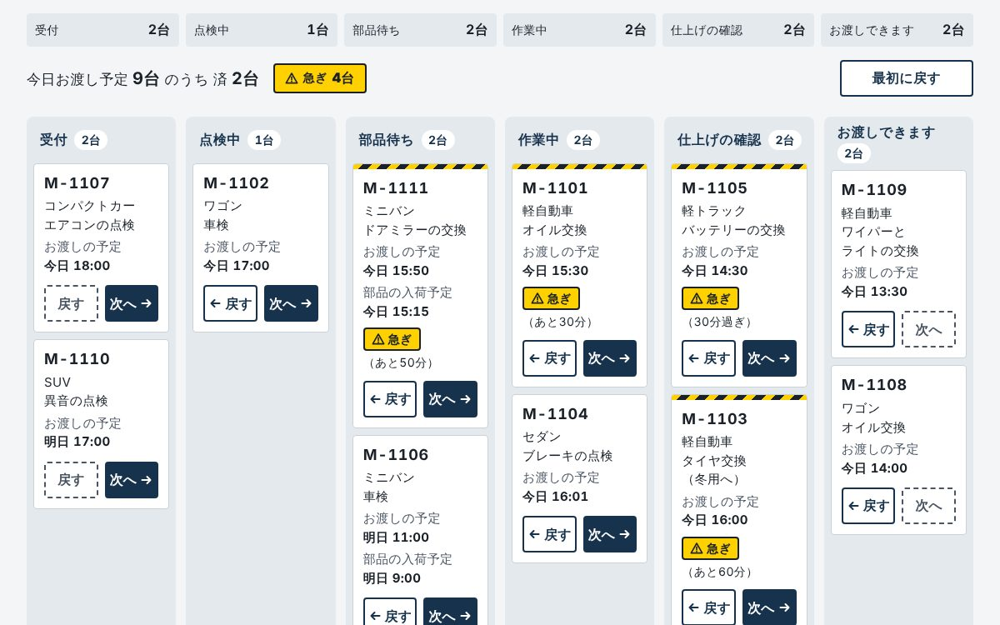
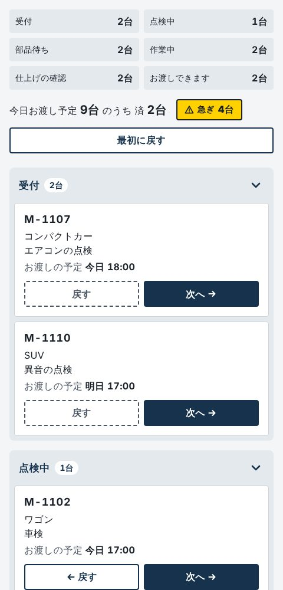
38 ／ 作業の進み具合の管理（動くデモ）
預かった車をカードにして、受付から「お渡しできます」まで6つの列を［次へ］で進めるボードです。お渡しの予定が近い車には「急ぎ」の印。同じ進み具合をお客様向けの表示にも出します
本番にするときは：列の数と名前をお店の作業に合わせ、スプレッドシートなどに保存してお店の人のスマホ・タブレットとお客様の画面をつなぎます
ホワイトボードと電話で回している「いまどこまで進んだか」を、お店とお客様が同じ画面で見られるようにする見本。整備・修理・クリーニングなど、預かって仕上げるお店の業務に合わせられます。
デモを触ってみる（ミチカゼ自動車整備の作業ボードと進み具合のお知らせ）
操作した内容はどこにも送信・保存されません。お店・車・作業はすべて架空です。
CONTACT
店舗のLP・ホームページ、売上・経費の管理シートや業務システムのご相談は、このページをご覧になったサイトのメッセージ機能からお気軽にどうぞ。